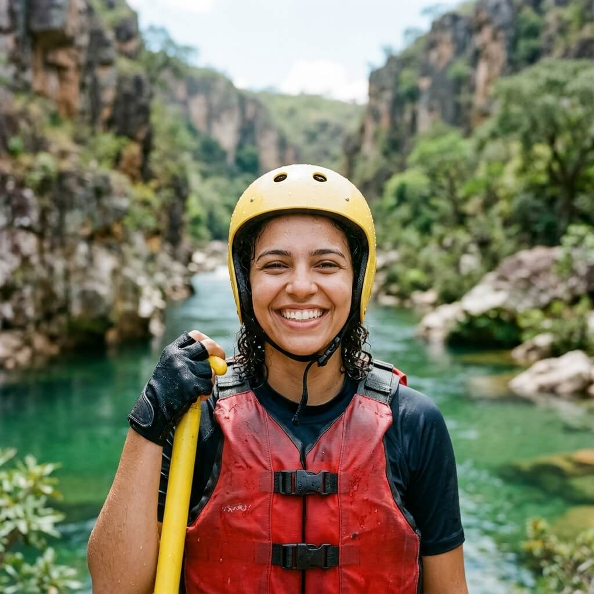

Assim como a água esculpe a rocha mais dura ao longo do tempo, acreditamos na força que nasce quando enfrentamos a correnteza. Nossa missão é guiar você pelos cânions da Chapada dos Veadeiros com coragem, segurança e respeito profundo à natureza.